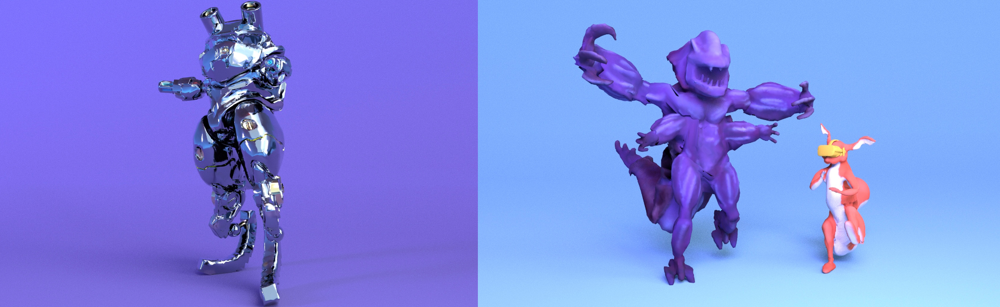
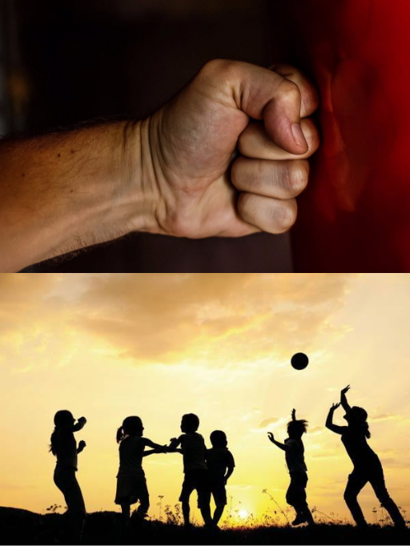
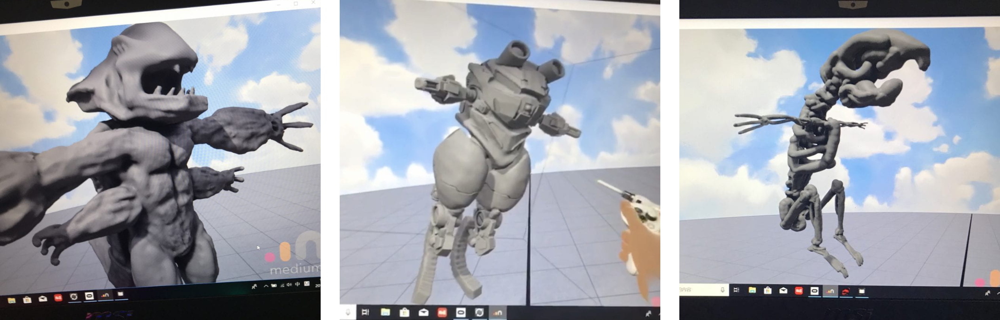
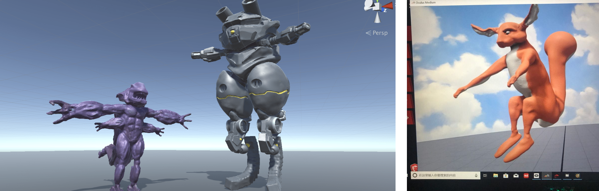
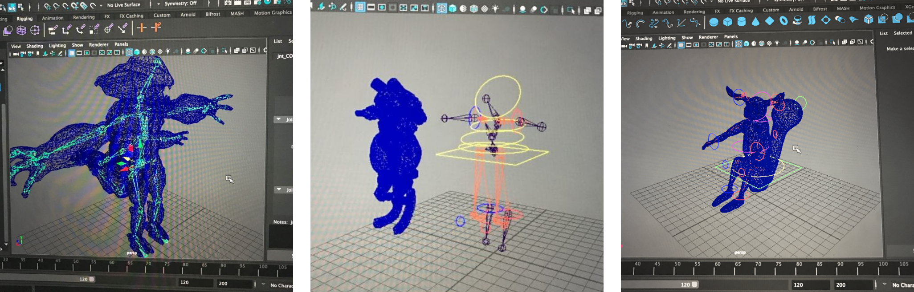
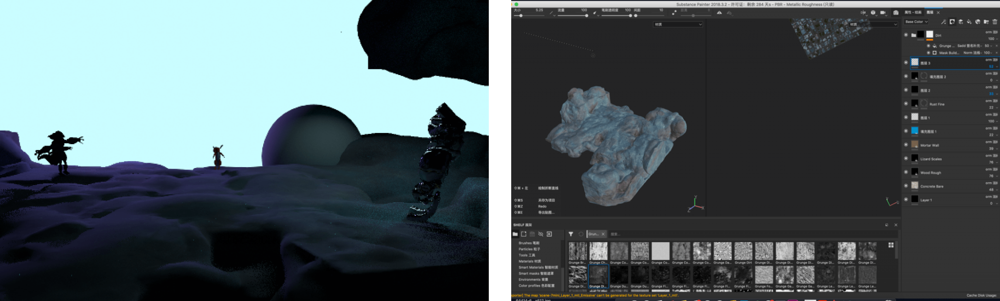
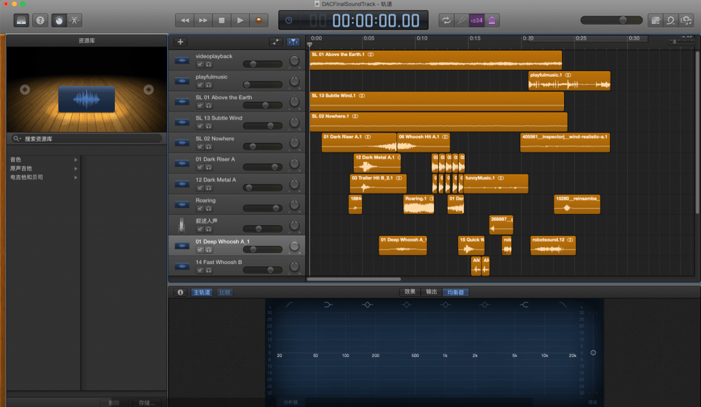
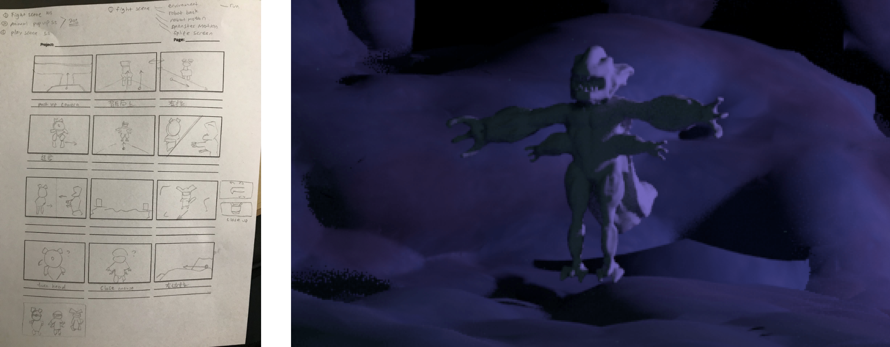
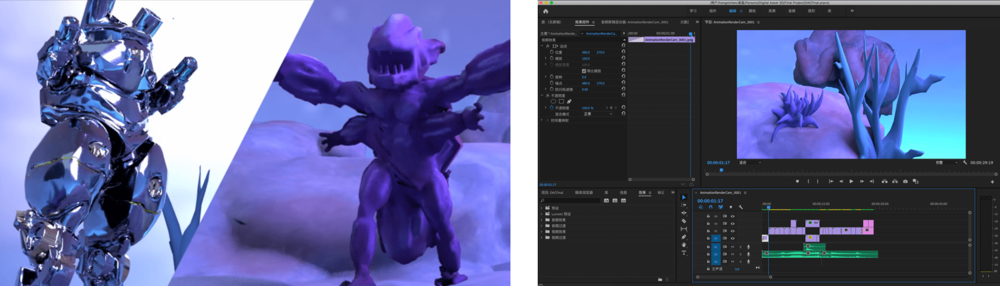

DIGITAL 3D CREATION
ANIMATION PLAY
PROJECT DESCRIPTION
Create full 3D character and assets for 10 seconds animation with full character and environment production and rendering. All projects must both fulfill the following requirements: 1. A fully rigged and animated bipedal character. 2. A minimum of five fully modeled and textured props or environment assets.
20190928

RESEARCH & IDEAS
Few months ago I read a book call Reality is Broken by Jane McGonigal. The book introduced the importance of gaming and the influence of it on people. At the beginning of the book, it describes 3000 years ago, a small village called Atys were suffered from food shortage due to a long period of drought. However, the people in village got together and made a plan to solve the food shortage issue. They planed that on day one every one will have food to eat, and on day two people will play games together to overcome hungry. This plan continued for approximately 18 years and people were able to survive through this natural desaster. In nowadays world, people from different area are fighting for various sources and territories. Violence and weapons are used widely and killed many innocent live. But what if people could embrace joy and happiness together instead of fighting each other? Therefore, based on this concepts, I want to create a short animation story to delivery my idea about violence and gaming.
#1
OCULUS MEDIUM VR
MODEL MAKING

For this project, I want to try a new modeling technique made by Oculus Medium. In this way, I can learn about VR 3d model creation and the workflow. First of all, I started by creating the monster and robot character. I first wrote and draw quick sketch about the characteristic of them on a paper and start sculpting in Oculus Medium. Compare with traditional modeling tool, Oculus Medium gave me the freedom to draw in a 3d space and prototype in a more natural way.

Each model took me around 6 hours from sketch to done with coloring because I want to approach as much detail as possible. The monster character represents the people that is greedy to have more than they need, therefore he had four hands. Lacking of eyes is symbolize for couldn’t see the reality and beauty of life. The second character is a robot to represent the power of weapon and machines. Since it only aiming for destroying a target, I gave the robot a small eye.The idea for the third model is a more neutral and friendly character, therefore I want to approach an animal like appearance. It is harder than I thought to sculpt the body of a squirrel, after a few trials of sketching the body directly and couldn’t get the shape correctly, I started to paint out the skeleton of a squirrel first then added on the muscles and finally the skin to get the perfect body shape of a smooth and skinny squirrel.

After all models were ready, I imported them into MAYA and started the rigging process. Since two of them is not humanoid body shape by having either extra hands, tails, or a robotic leg, I needed to consider more thoughtfully about the orientation of joint, how it can combine to the spine or hula joint, and the possible animation gesture that I want to get. During the process of making, I encounter a big problems that since all the model are made in Oculus Medium and was exported in triangles mesh format, it was very difficult to repaint the mesh weight. It took me a lot of time to figure out the best solution for the mesh to stay together as much as possible by lower down the Maximum Influence Joint down to one and reposition the joint to the mesh position.
#2
Substance Painter + Maya + Garageband
Animation Making

The original land was paint in VR as well, which is too clean to be realistic. Therefore, I used substance painter to add more stone texture and dirt onto the model texture to make it appear older. After finished the scene texture, I also imported my robot character into substance painter to give it a reflective metallic surface.

Meanwhile, I download some atmosphere music, sound effect and white noise raise from Freesound.com to create the background music for my animation. I edited the sound in GarageBand and arranged them to the right timing for animation. Moreover, I adjusted the volume of the sound to have a fade-in and out effect.

After the scene is ready, I animated the character by fitting their movement with the background music that I had made previously. In order to get a more smoother movement for the character, I adjusted the animation graphic editor and eliminated the unnecessary keyframe. Quickly sketch a storyboard helps me to think about the camera angle for each shot. By utilizing this and the IPR previous, I was able to animated the camera movement and render it out in MAYA Arnold.

Because each character had a very different color tone — purple, metallic, orange. Therefore, I created separated area lights assets for each of them to help making the colors pop up a little bit more. Besides individuals lighting, there is also a general skydome lighting that emitting the natural sky light from an image source that I found online to create an overall scene lighting.
Arnold render rendered the image into separated JPEG image sequences, so I imported them into Adobe Premiere to make them into a short video. For a scene where the robot and monster character running towards each other, I split the screen into two half diagonally to create an intense effect. Finally, I added some small transition for the beginning and ending of the senses to indicate a start and end.
Arnold render rendered the image into separated JPEG image sequences, so I imported them into Adobe Premiere to make them into a short video. For a scene where the robot and monster character running towards each other, I split the screen into two half diagonally to create an intense effect. Finally, I added some small transition for the beginning and ending of the senses to indicate a start and end.
The Final
CONCLUSION & REFLECTION
This projects helps me to learn about the pipe line of 3D animation and overcome difficulties. Oculus Medium is a great tool for sketching out 3d models and character, I was able to finished all three organic characters by using this software. However, the purpose of Oculus Medium is more towards a 3d printing model, therefore I had problems to work on it for animation. If I have more time to create this project next time, I will use retopologize the model in MAYA to make new mesh loop, which will be better for rigging and animation purposes. Moreover, I will like to work on the camera angle and character movement more to make the animation more smooth and natural.
Fights between specious are always happening in both wild life and civilization. Some of them are aiming for survival and some of them are meaningless to fulfill individual wants. What if there we can replaced violence with joy and happiness? What if people can live with each other together with peaceful and appreciation? Gaming can be one of the solutions that brought people together in a virtual world, but how can we apply the same principle back to our real life? Human beings is a very intelligent specious, as a mission and responsibility, we should rethink about the connection we had within ourselves and also the rest of the ecosystem.